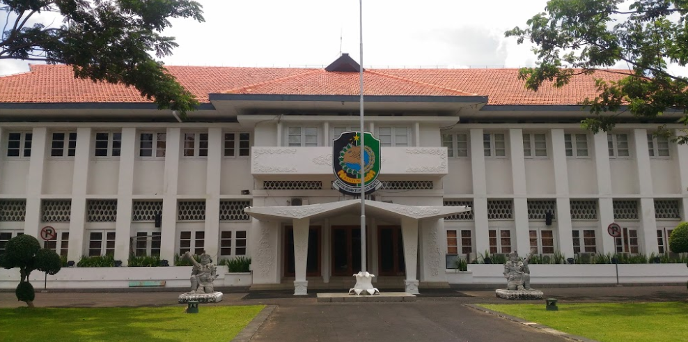

Sejarah

Sejarah Banyuwangi tidak lepas dari sejarah Kerajaan Blambangan. sejarah nama Banyuwangi berasal dari sebuah legenda masyarakat,arti nama Banyuwangi adalah Banyu yaitu Air dan Wangi itu harum, menurut legenda pangeran banterang pangeran kerajaan blambangan bertemu dengan dewi surati ketika ia berburu, pada pertama kalinya ia mengira dewi surati adalah lelembut karena kecantikanya namun ternyata ia adalah seorang manusia,lalu raden banterang menyukainya dan ingin sekali menikahinya namun sebelum itu dewi surati menceritakan asal usulnya bahwa dirinya adalah seorang putri dari kerajaan musuh blambangan yaitu kerajaan kelungkung dari bali, dia mengaku hidup sebatang kara karena keluarganya telah habis di peperangan dengan kerajaan belambangan, namun hal tersebut tidak menghentikan niatnya untuk menikahi dewi surati, dan pada akhirnya keduanya menikah namun diam - diam raden banterang menyembunyikan asal usul dewi surati karena takut raja mengetahuinya, pada suatu hari setelah pernikahanya dewi surati keluar dari istana ia bertemu pengemis, namun rasanya dewi surati tidak asing dengan wajah pengemis tersebut, hingga ia menyadari bahwa pengemis tersebut adalah kakaknya yaitu rupaksa. dewi surati sangat bahagia karena ternyata ia tidak sendirian ia masih memiliki keluarga, namun sang kakak berniat jahat memanfaatkan posisi dewi surati sebagai istri raden banterang untuk membalaskan dendamnya, ia rupaksa memberikan keris dengan ukiran khas kerajaan kelungkung ke dewi surati lalu ia menyuruh dewi surati untuk menaruh keris tersebut di bawah bantalnya untuk berjaga- jaga apabila dia diserang, namun sesaat raden banterang bertemu seorang yang mengetahui rencana rupaksa dan memberitahu rencana busuk rupaksa. raden banterang pun marah besar karena hal tersebut, lalu ia menghampiri surati mencari keris tersebut di bawah bantal surati dan didapati keris tersebut lalu raden banterang sangat sakit hati dan menghina surati teganya engkau melakukan ini, menghianatiku
, surati menjawab dengan hati yang tulus bahwa dia tidak ada niat jahat kepada raden banterang, namun tetap saja ia mengancam surati, hingga surati menangis sedih, raden banterang menariknya hingga ke sungai yang deras dan surati masih menangis ia rela melakukan apapun untuk membuktikan bahwa dia tulus mencintai suaminya namun raden banterang tidak percaya dan pada akhirnya surati bersumpah kakanda apabila aku mati dengan keris ini dan airnya berbau wangi maka aku tulus mencitaimu namun apabila airnya keruh dan berbau busuk berarti aku telah berkhianat padamu kakanda
, lalu surati menusukan keris tersebut ke tubuhnya dan ia menjatuhkan diri ke sungai maka tercium bau yang sangat wangi, raden banterang menyesali perbuatanya, ia pun memilih menjatuhkan diri ke dalam sungai tersebut dan mati bersama surati. wangi.... banyu.... wangi.... banyu... surati....
begitulah asal usul nama Banyuwangi.